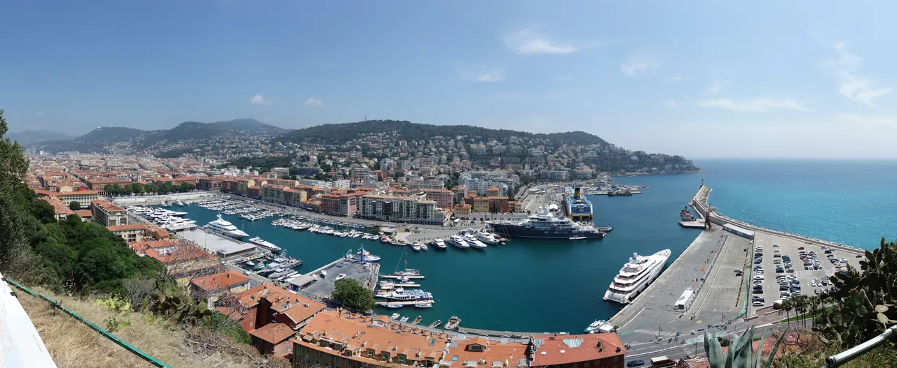

{kind=link}
관광·미술관
Nous avons déjà des billets.
이미 표가 있습니다.
누 자봉 데자 데 비예

기원전 3세기 고대 그리스인들이 세운 최초의 식민 도시 '니카이아(Nikaïa, 승리의 여신 니케에서 유래)'가 시작된 니스의 요람이자 발상지다.
구시가지와 림피아(Lympia) 항구 사이에 우뚝 솟은 해발 92m의 절벽 언덕으로, 중세에는 난공불락의 군사 요새와 니스 구 대성당이 자리 잡고 있었다. 비록 1706년 프랑스 루이 14세의 침공으로 요새가 완전히 파괴되었으나, 19세기 초 사르데냐 국왕 카를로 펠리체의 명으로 울창한 수목과 인공폭포, 산책로를 갖춘 도심 공원으로 재탄생했다.
정상에 서면 서쪽으로는 부드러운 곡선을 그리는 천사의 만(Baie des Anges)과 프롬나드 데 장글레의 해안선, 발아래로는 비외 니스의 붉은 기와지붕이, 동쪽으로는 호화 요트들이 정박한 림피아 항구(Port Lympia)가 한눈에 펼쳐진다.
니스에서 단 한 곳의 전망대를 골라야 한다면 주저 없이 이곳이다. 서쪽 천사의 만과 동쪽 항구라는 전혀 다른 두 개의 지중해 풍경을 동시에 체감할 수 있다. 현장에서 운행 중이면 벨랑다 탑 옆의 무료 공공 엘리베이터(Ascenseur du Château)로 오른 뒤, 1885년 완공된 인공폭포를 거쳐 계단을 따라 해안으로 하산하는 45~60분 코스를 추천한다.
| 운영시간 | 4/1~9/30 매일 08:30~20:00. 9월 방문은 20시 폐장 |
|---|---|
| 휴무 | 연중무휴 |
| 요금 | 무료 |
| 예약 | 예약 불필요·무료 입장 |
| 소요시간 | 45–75분 재확인 |
| 메모 | 엘리베이터 운행은 현장에서 확인하고, 중단 시 계단·보행 또는 일정 압축 재확인 |
| 항목 | 상세 정보 |
|---|---|
| 위치 | Colline du Château, 06300 Nice, France |
| 공원 운영 | 4/1–9/30 매일 08:30–20:00 (9월 방문은 20:00 폐장) |
| 입장 요금 | 공원 무료 (Free Admission) |
| 무료 엘리베이터 | 1 Rue des Ponchettes 방향 진입 · 운행 상태는 현장에서 확인하고 중단 시 계단·보행 또는 일정 압축 |
| 도보 하산 | 벨랑다 탑 계단을 이용해 프롬나드 데 장글레 해변 광장으로 10분 하산 |
💡 동선 팁: 쿠르 살레야(Cours Saleya) 시장이나 비외 니스 관람 후 엘리베이터를 타고 성채 언덕으로 이동하는 순서가 체력 소모를 최소화하는 정석 코스입니다.
사보이 백작령의 난공불락 요새였던 니스 성채는 1705년 스페인 왕위 계승 전쟁 당시 프랑스 베릭 공작의 군대에 의해 포위되었다. 1706년 성채가 함락되자 루이 14세는 지로나처럼 니스인들이 다시는 요새를 기반으로 저항하지 못하도록 성벽과 성채, 탑을 지상에서 흔적도 없이 폭파하여 평탄화시켰다.
Nous avons déjà des billets.
이미 표가 있습니다.
누 자봉 데자 데 비예
On peut prendre des photos ?
사진 찍어도 되나요?
옹 푀 프랑드르 데 포토
Où commence la visite ?
관람은 어디서 시작하나요?
우 코망스 라 비지트

국제영화제의 상징 크루아제트 대로와 호화 요트 항구, 그리고 11세기 중세 어촌의 원형 르 쉬케 언덕이 공존하는 코트다쥐르의 영화 도시.

지중해 꽃과 프로방스 제철 식재료, 그리고 갓 구워낸 니스 전통 소카(Socca)를 맛보는 유서 깊은 야외 시장 광장.

지중해로 60m 솟아오른 천연 바위 절벽 위에 조성된 모나코 대공국의 역사적 심장부이자 왕궁 마을.

크루아제트의 화려함 뒤에 숨겨진 11세기 옛 어촌의 가파른 돌계단 골목과 정상 성당에서 바라보는 칸 만의 파노라마.

칸 주민들의 부엌이자 지중해 해산물, 프로방스 과일, 꽃, 치즈가 가득한 1934년 유서 깊은 철골 재래시장.
관광객 중심의 쿠르 살레야와 달리 니스 현지 주민들의 진짜 장바구니 물가와 일상을 만나는 대형 야외 농산물 시장.